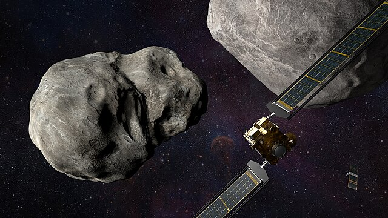

計畫目標
此計畫的目標就是雙星系統迪迪摩斯(Didymos)中的子星迪莫佛斯(Dimorphos)。 發射日期在2021年的11月23日，打擊日期在2022年的9月26日。
選擇它為打擊目標的原因有很多，其中最重要的原因就是因為可以通過地面上的望遠鏡去測量迪迪摩斯(Didymos)系統組合的亮度變化，來確定打擊後子星迪莫佛斯(Dimorphos)繞著母星(迪迪摩斯/Didymos)的軌道的週期變化。並且兩者都不在與地球相交的軌道上，若他們的軌道出現細微的變化，並不會對地球造成影響。